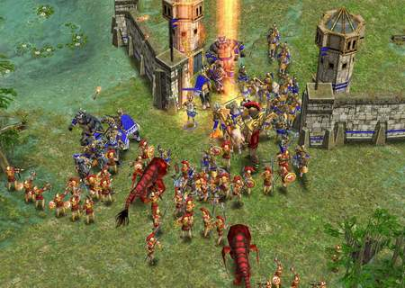
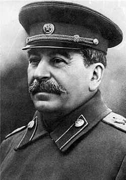

| Fecha de Publicación: 27/07/12 |
El Bressanismo prepara una ofensiva hacia las Islas Malvinas

La mejor estrategia de todos los tiempos
"Luego de muchas horas de Call of Duty, tenemos listos todos nuestros planes para sacar a esos asquerosos ingleses de las tierras que nos pertenecen. Aunque no sabe muy bien cómo se llevará a cabo, ya que esos gringos siempre tienen traductores y nos pueden cagar todo, tenemos la certeza de llevar nuestra mejor arma de destrucción masiva: kamikazes negros."
[Leer más] |
Fecha de publicación: 22/07/12 |
El Bressanismo nos enseña cómo hacer caca

Bressán haciedo lo más normal del mundo
"Ese hecho tan maravilloso que nos ocurre cada tanto, ¿acaso creían que el Bressanismo era pura política y negros? Pues no, nosotros somos muy didácticos y les enseñaremos a cualquiera de raza humana como despedir sus desechos de la mejor manera conocida."
[Leer más] |
Fecha de publicación: 21/07/12 |
El Bressanismo en contra del ateísmo

Alejaos de él, herejes
"El ateísmo es esa postura filosófica estúpida y que pretende mostrar un intelecto superior, cuando en realidad lo único que hacen es decir y preguntar siempre lo mismo para llegar a un montón de conclusiones. El avance es bastante mayor de lo esperado, y en este país no queremos que personas inteligentes lo manejen y, menos aún, los habiten."
[Leer más] |